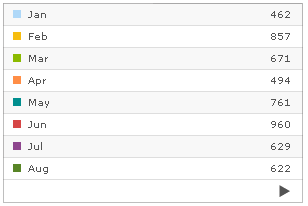
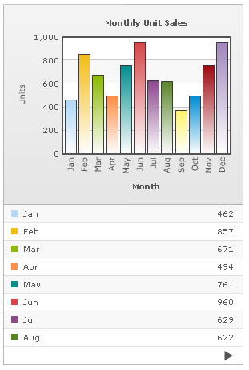
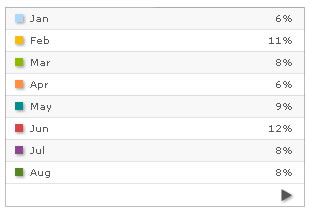

Grid Component > How to Use? |
Here, we'll see how to use the grid component. To start with, we'll first create a very basic page with just a grid (and no chart even). To do so, create a new HTML file SimpleGrid.html with the following code: All code examples discussed in this section is present in Download Package > Code > Grid. |
<html> <body bgcolor="#ffffff"> </body> |
| In the above code, like any other previous chart, we're embedding the grid component (SSGrid.swf) and then providing Data.xml as its dataURL. Data.xml contains the following single series XML data: |
| <graph caption='Monthly Unit Sales' xAxisName='Month' yAxisName='Units' showValues='0' decimals='0' formatNumberScale='0' labelDisplay='Rotate'> <set label='Jan' value='462' /> <set label='Feb' value='857' /> <set label='Mar' value='671' /> <set label='Apr' value='494' /> <set label='May' value='761' /> <set label='Jun' value='960' /> <set label='Jul' value='629' /> <set label='Aug' value='622' /> <set label='Sep' value='376' /> <set label='Oct' value='494' /> <set label='Nov' value='761' /> <set label='Dec' value='960' /> </graph> |
| When you now view this page, you'll see the following output: |
|  |
| Let's now see how to plug this grid with a chart. |
| Combining the grid with a chart |
| Using the grid with a chart is same as using two chart types. The only difference is that the grid and chart now use the same data source instead of two different data sources. The following HTML code (GridWithChart.html) would explain the concept: |
<html> <body bgcolor="#ffffff"> |
In the above code, we're first rendering the chart and then rendering the grid. The dataURL for both is provided as Data.xml, as want the grid to relate to the chart itself. When you now view this, you'll get the following output: |
|  |
| Providing parameters to grid |
Apart from the configuration parameters provided in XML, you can also specify exclusive parameters for the grid. This is done using FlashVars, as the XML already contains parameters for the chart and you cannot disturb that. The grid supports a lot of parameters listed in next section. Here, we'll just see how to use them. Shown below is an example, where we convert our above example to show percentage values in grid instead of values. The grid exposes a parameter which helps you do so. Also, we'll set the grid to show shadow for the color boxes and navigation buttons. The following code does the same (ParameterGrid.html): |
<html> <body bgcolor="#ffffff"> |
As you can see above, we've added two new parameters for the grid named as showPercentValues and showShadow. We've set 1 as value for both these parameters. The supported list of parameters for the grid is listed in next section. When you now see this grid, it will look as under: |
|  |
| As you can see, the numbers have been converted to percent values and also there's the shadow effect. |